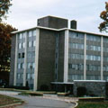

|  |
Leo Hall
Built in 1963
Freshman residence |
With its construction funded by a federal government loan, Leo Hall opened in 1963 as a dorm for Marist students. Six stories tall, it houses approximately 290 students and provides a lounge, recreation hall, and balconies for studying and relaxing. Resident students used to call it "Leo Hilton" because the dorm was able to satisfy their intellectual, recreational, and general needs and its location provided residents with beautiful views of the Hudson River. Women took up residence on the sixth floor when they were allowed to attend Marist in 1969. At one point, the basement of Leo was used as an alternative classroom because of the large increase in admitted students.
Leo Hall is dedicated in memory of Brother Leo Brouiletter, who served as Provincial of the Marist Brothers from 1921 to 1930. In 1929 he secured the original charter for the Marist Normal Training School.
Leo presently serves as a co-ed dorm for freshmen students at Marist.